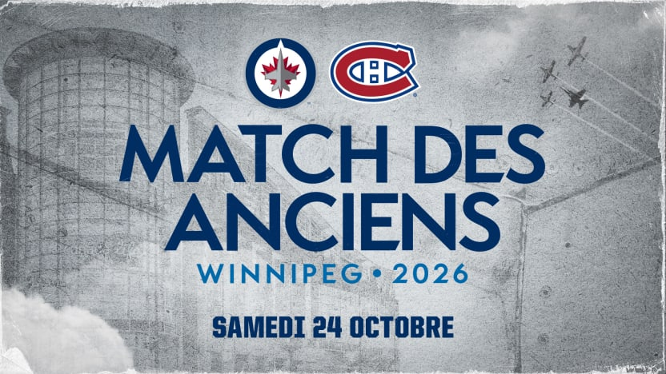

Les anciens joueurs des Canadiens et des Jets s’affronteront à Winnipeg
Le Match des anciens est annoncé en vue de la Classique héritage 2026

par
Canadiens de Montréal
/ canadiens.com
21 janvier 2026
MONTRÉAL – Un match d’antan attend les anciens joueurs des Canadiens et des Jets à Winnipeg la saison prochaine.
Depuis mardi, les premiers détails en vue du Match des anciens qui aura lieu dans le cadre des festivités entourant la Classique héritage 2026 sont connus.
Les anciens membres du Tricolore et des Jets se retrouveront à l’intérieur du Canada Life Centre le 24 octobre 2026, à la veille de l’affrontement extérieur du 25 octobre tenu au Princess Auto Stadium et opposant les formations actuelles des deux équipes.
Parmi les informations partagées mardi l’on retrouve les formations de départ des deux équipes d’anciens. Voyez la liste de joueurs ci-dessous :